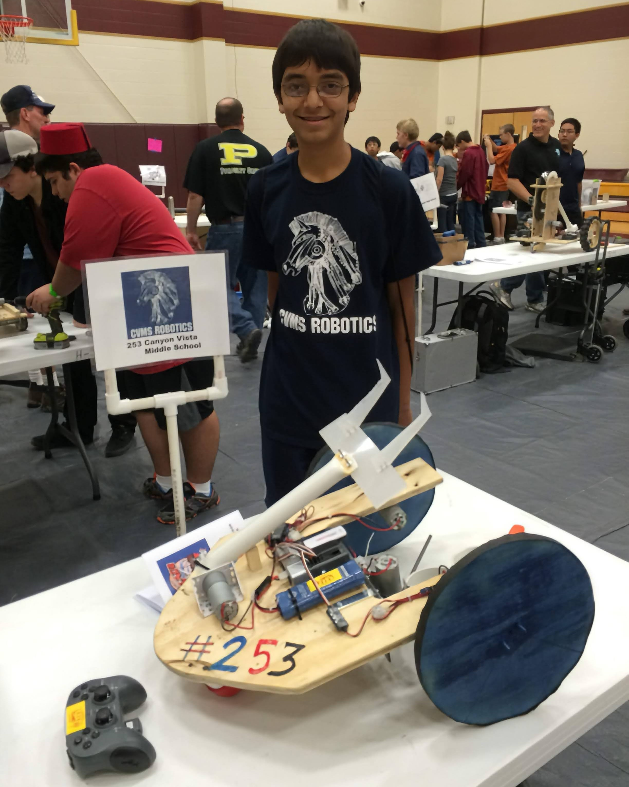
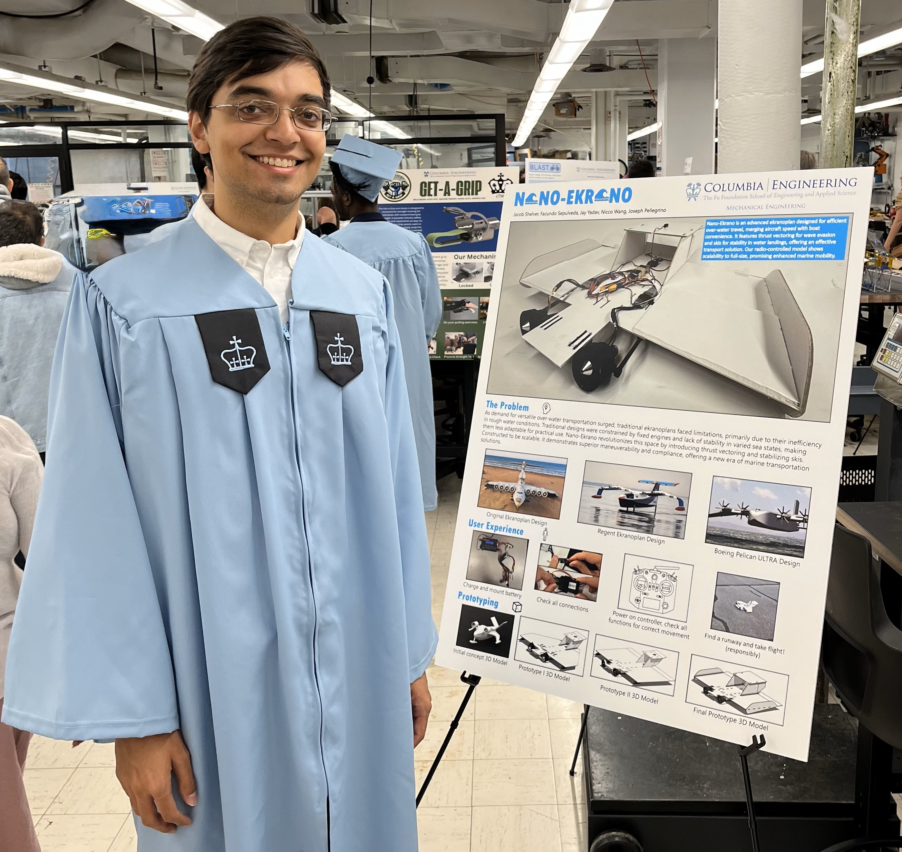
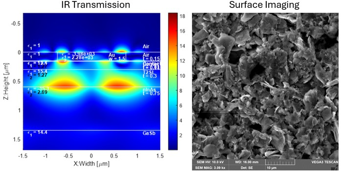

Background
My passion for engineering and design started at a young age. I always loved constructing cities, buildings, and planes with blocks and legos. I was fortunate enough to follow my passion as early as middle school when I was offered engineering classes and clubs. In high school, I was introduced to professional programs like Autodesk Inventor and led our Aerospace Club where we pursued projects like constructing an antenna to talk to the ISS and launching high-altitude balloons.
Education
Going into college, I decided that I wanted a broader, more individualized education than what many traditional engineering schools were offering. That led me to enter a 3-2 Engineering Program, where I first earned a physics degree at Grinnell College before completing a mechanical engineering degree at Columbia University. I really enjoyed my time at Columbia, where I was able to work hands-on with so many projects and learn the fundamental engineering tools I will need to succeed in my career. To further deepen my knowledge, I am pursuing an accelerated master's program that I will complete this coming May.
I couldn't be happier with the path I chose. My time at Grinnell helped shape me into a more well-rounded individual, especially by strengthening my writing and communication skills. Meanwhile, my time at Columbia provided the tools and confirmation of my passion for engineering through both classes and extracurricular projects.
Research Experience
Between my college semesters, I have been lucky enough to work on some very exciting programs over the summers. During my first three summers, I worked in university research labs, contributing to cutting-edge projects. Those experiences were both exciting and intimidating, teaching me the importance of balancing independence with seeking help when necessary. They pushed me to learn quickly on the fly, especially since I was working in engineering labs without having taken prior engineering classes.
Professional Experience

I was able to harness my time over the summers and at Columbia into my first experiences in industry at Textron Aviation the past two summers. The first summer I worked in Customer Support Engineering, where I created technical troubleshooting systems for aircraft in HTML (which helped me make this site!). I gained valuable insight into the extremely complex engineering and design considerations required to allow machinery like an airplane to function effectively. Seeing how those choices impacted the customer support side helped broaden my perspective on engineering and reinforce the importance of accounting for all variables in the design process.
All of my prior experience combined last summer into my Advanced Design Engineering Internship that I expect will be most similar to my career. The aircraft knowledge from the previous summer and engineering skills from Columbia especially helped me succeed in a professional design environment. The opportunity to experience and contribute to an entire, professional CAD was a very rewarding experience for me. It was incredible to see that, while much more complex, it shared many similarities and design principles to what I had worked on previously in classes and clubs at Columbia. My experience in those clubs made it much easier to understand and get the most out of my internship, which I thoroughly valued.